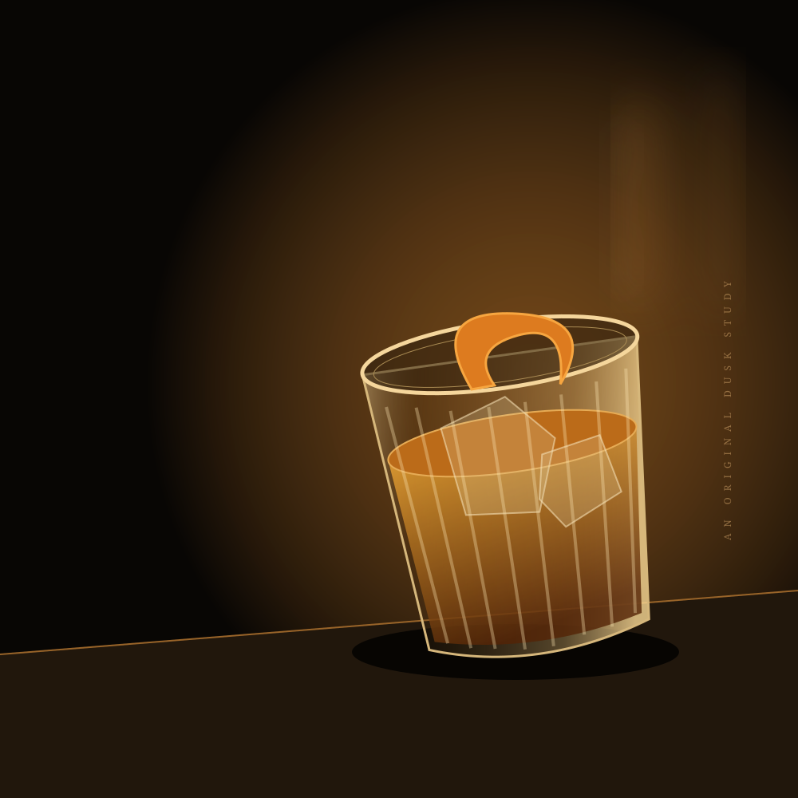

CRAFT COCKTAIL BAR · SOHO, LONDON
CRAFTED
BY HAND.
SERVED WITH
INTENT.
A rotating menu of 24 craft cocktails, an obsessive spirits selection, and a room that makes you stay a little longer.
THE MENU / A STUDY IN BALANCE
WHAT WE MAKE
Seasonal ingredients. Restless curiosity.
Always a reason for another visit.
Current signatures
BEHIND THE DOOR
THE ROOM
“A good drink
deserves a good hour.”
We built Dusk for people who agree. Dark wood, warm brass and just 40 seats. No TVs. No DJ after 10pm. No rush.
Reserve ahead, or follow the light on Beak Street. Walk-ins are always welcome if there’s space.
MAKE A NIGHT OF IT
PRIVATE HIRE & EVENTS
Full bar buyouts Sunday–Monday. Cocktail masterclasses for 8–20.
Seasonal supper clubs, announced when the time is right.
Demo email address — opens your email app; nothing sent here.
“Every cocktail is genuinely considered. The best mezcal sour I’ve had this year.”MARCUS T. · SOHO
“The kind of room where one drink becomes a whole evening.”ELLA R. · GUEST
“All the theatre. None of the pretence.”JAMES L. · GUEST
YOUR EVENING STARTS HERE
YOUR TABLE
IS WAITING.
Tues–Sun, 5pm–1am · Last seating 10:30pm.
12 Beak Street, Soho, London W1F.
Plan a visit below. This demo does not reserve a table,
check availability or send personal details.